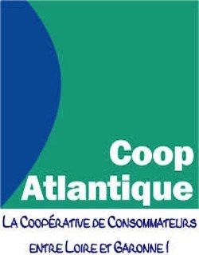

La pratique de la gymnastique peut être débutée à la Patriote dès 15 mois que l’on soit une fille ou un garçon.
La Baby Gym est une activité à caractère ludique. Les consignes utilisées sont claires, simples et précises.
Les situations proposées sont variées, attractives et évolutives selon l’âge de votre enfant. La baby Gym c’est un premier pas vers l’autonomie.
Pour cela nous favorisons l’exploration spontanée de votre enfant, la créativité, l’imitation, la sollicitation de la prise de risque en toute sécurité
et la socialisation des enfants.
Quand on arrive en moyenne section et que l’on pratique la Gymnastique, on s’appelle depuis plusieurs années un éveil.
Au club, nous sommes une abeille si l’on est en Moyenne Section et une Chouette si l’on est en grande section de Maternelle.
Aujourd’hui la FFGym revoit tout son Programme pour les 15 mois – 6 ans et afin de lisser la discipline, tous nos enfants s’appelleront des Baby Gym jusqu’à leurs 6 ans.
Aujourd’hui j’ai 4 ans, je suis en moyenne Section, je suis un Baby Gym 4 et toujours une abeille.
J’ai 5 ans, je suis en Grande Section, je suis un Baby Gym 5, je suis une Chouette et je découvre l’ACCESS Gym que je continuerai chez les grands en Ecole de Gym
l’an prochain.
| Baby Gym 1 (15-24 mois) | Samedi de 17H00 à 17H30 | ||
| Baby Gym 2 (2 ans) | Samedi de 9H00 à 9H45 | ||
| Baby Gym 3 (3 ans) | Le Mercredi de 10H00 à 10H45 | Le Samedi de 10H00 à 10H45 | |
| Baby Gym 4 (4 ans) | Le Mercredi de 17H00 à 18H00 | le Vendredi de 17H30 à 18H30 | |
| Baby Gym 5 (5 ans) | Le Mercredi de 18H00 à 19H00 | le Vendredi de 18H30 à 19H30 | Le Samedi de 11H00 à 12H00 |
La Patriote vous informe : L'enfant pratiquant la Baby Gym 1-2-3 est accompagné par un de ses proches tout au long de la Séance.
La FFGym soucieuse de garantir à ses licenciés des prestations de qualité délivre depuis près de 15 ans des labels Petite enfance.
Charte de qualité et de sécurité, le label Petite enfance n'est jamais définitivement acquis pour un club et est renouvelable tous les 4 ans.
La Patriote Limousine possède ce Label depuis 2001 et l'a renouvelé pour la dernière fois en septembre 2014 et travaille sur son renouvellement en 2018.
Ce label est attribué si les clubs FFGym suivent des pratiques répondant à un cahier des charges précis, si les encadrants sont diplômés ou formés par le Club,
si le club possède le matériel pédagogique adapté à la pratique de la Baby Gym.
Nos sponsors :
